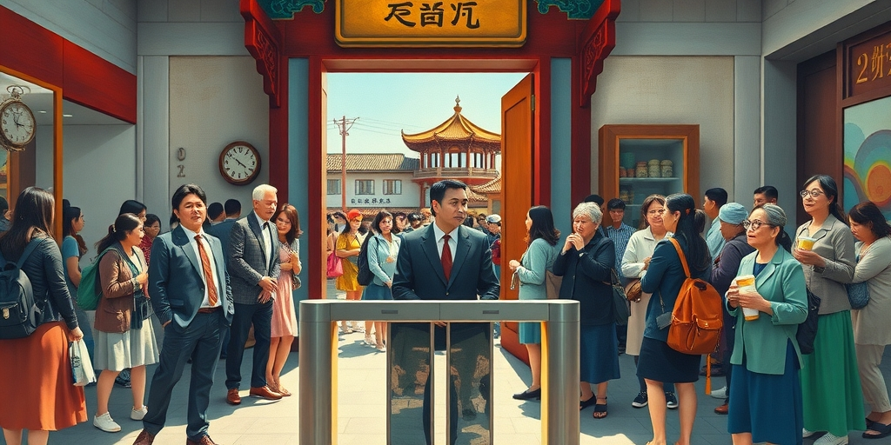
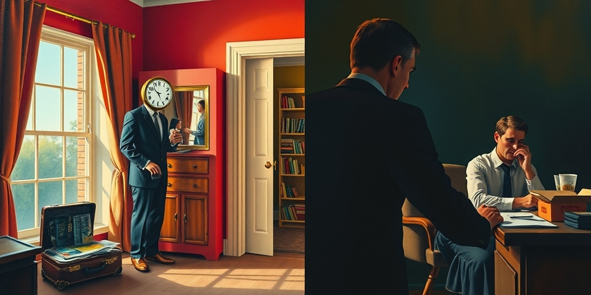
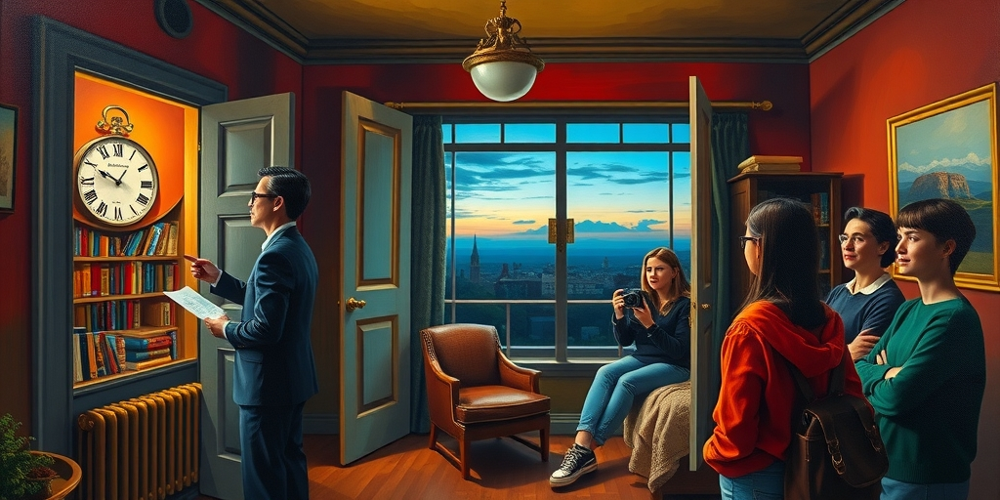

小汪老师的成长洞察 · 属于你的成长专栏
2026年的中国文旅产业，上演着一场安静的性别大分流：景区里挤满了女性游客，而她们的伴侣越来越多地选择留在出租屋里，对着一份黄焖鸡米饭刷短视频。当经济压力碾过每个家庭，两性拿出了完全不同的应对剧本。女性走出去，用旅行维持生活的正常感；男性留下来，在屏幕前消解无处安放的压力。旅游市场的版图，已被这种差异深刻改写。

七月的大理古城，南门入口的人流一波接一波。你站在旁边看十分钟，会发现一个奇怪的比例：十个人里，七八个是女人。带娃的妈妈，结伴的闺蜜，独自背包的年轻女孩。她们举着手机拍照，在树荫下分吃一根雪糕，或者对着地图商量下一站去哪。偶尔有一两个男人经过，多半是背着全家行李的丈夫，或者被女友拽着胳膊的男朋友。他们脸上的表情，像在完成一项任务。男人们去哪了？
同一时间，一千公里外的出租屋里，她的男友或丈夫刚打开一份黄焖鸡米饭外卖。手机架在泡面盖上，短视频的声音盖过了窗外的蝉鸣。他不是不想出门。去年他们还一起去了三亚，但今年他的季度奖金砍了一半。房贷利率虽然降了，裁员的消息在同事群里转了三轮。出门这件事在他的消费决策里，被划到了“以后再说”那一栏。他扒拉两口饭，拇指机械地往上滑。窗外的城市灯火通明，但他的世界缩成了六寸屏幕。
这不是孤例。在丽江、在喀纳斯、在甘南的草原公路上，同样的画面反复出现。民宿老板发现，今年暑期入住的女性客人比例超过了七成。拼车司机说，以前还能接到几个男游客，现在一车人里常常只有一个男的，还是被女朋友拉来的。景区越来越热闹，但热闹是她们的。这个并置指向了一个事实：旅游市场的性别结构已经发生了深刻改变。当文旅产业整体降温时，女性游客的身影不仅没有减少，比例反而在持续攀升。从苍山洱海到塞外戈壁，从五星酒店到青旅床位，女性的身影填满了旅游业的每一个角落。男性，仿佛集体按下了退出键。
文旅产业经历着一场寒冬。25家上市文旅公司一季度56.8%营收负增长，中青旅亏损3690万。景区砸钱买流量、砌墙逼消费，效果寥寥。就在这个降温的行业里，一个反直觉的分化出现了：女性游客的比例持续攀升。
这种观感背后有扎实的数据支撑。携程连续多年的旅行报告显示，女性旅行预订占比一路上升。从2019年的约55%，到2024年已超过60%。同程旅行的数据口径类似，女性用户占比超过58%，年均出游频次比男性高出约30%。马蜂窝的用户画像更极端：女性旅行内容创作者占比超过70%。“闺蜜游”“独自旅行”是平台上增速最快的两个品类，独自旅行预订中女性占比超过70%。在出境游和高端游领域，性别分化同样显著。飞猪2024年报告指出，女性在出境自由行预订中的占比达65%，在高星酒店预订中的占比达62%。这些领域单次消费金额更高，决策周期更长，但女性依然在主导。女性在高端消费上的占比同样领先，她们在每一个消费层级上都已成为绝对主力。当行业讨论“消费降级”时，忽略了一个关键事实：降级的主要是男性，女性在升级。女性不仅出游频次更高，消费金额也未见缩水。她们在用自己的钱包，维持着这个行业的体温。
与此同时，男性的旅游消费在收缩。携程数据显示，2023到2025年间男性用户的年均出游频次下降了约15%。人均消费金额增长停滞甚至微降。尤其明显的是30-45岁男性，这个群体本是消费核心主力，但近两年出游意愿和成行率都在下滑。这些数字拼出一个清晰的趋势：旅游市场的增量，几乎全部来自女性。男性，已经从旅游消费的版图上大面积撤退。旅游业的降温，本质上是一场性别维度的结构性洗牌。

这个分化的根源，在于两性在经济下行期采用了完全不同的消费策略。
女性的策略是维持体验型消费。多项消费者行为研究发现，在经济压力下，女性更倾向于削减日常高频小额支出。外卖、快时尚、零食被砍掉，但低频高情感回报的大额支出被保留，比如旅行、社交聚会、文化体验。逻辑很简单：一杯奶茶省掉不会影响你对生活的感受，但一场旅行的取消会让你觉得“今年什么都没做”。旅行对女性而言不仅是休闲，是社会连接的生产，是情感支撑的补充。它属于心理基础设施的一部分，不是可有可无的消费。这种行为背后有坚实的行为经济学基础：体验带来的幸福感比物品更持久。女性在压力下，本能地选择了更高效的幸福来源。这种消费选择的背后，还有一种被低估的推力：过去十年，中国女性的经济独立持续深化。女性劳动参与率在全球保持高位，收入增长和消费自主权扩大，让“自己想走就走”从态度变成了支付能力。携程数据印证，女性独自出游增速最快的年龄段是25-35岁，正是经济独立程度最高的群体。她们不需要等谁批准，也不需要谁来买单。
男性的策略是全面消费收缩。研究显示，男性在经济压力下削减消费的路径是“先砍非必需”。而“非必需”的定义几乎覆盖了旅行、文化娱乐、社交聚会的一切。男性更倾向于把钱集中在确定性更高的支出上：还贷、储蓄、置换耐用品。盖浇饭代表的是预算选择。旅行被取消，是因为它在男性的决策树里被归为“可推迟的”。更深一层，男性在社会化过程中更少被训练去维护情感网络。当压力来临时，他们缺乏通过消费来维系社会连接的内驱力。他们收缩了支出，也收缩了向外连接的通道。这种收缩有时超出理性必要，不仅砍掉旅行，也砍掉社交、爱好、甚至自我提升。收缩变成了一种惯性，刹不住车。这两种策略，没有高下之分，只是方向不同。但它们汇合在一起，就形成了旅游市场那条越来越宽的性别鸿沟。

把这两种消费策略放到更大的社会转型框架里看，会发现一个更深的叙事：女性走出去，是因为她们在用自己的方式重建社会连接。这无关乐观或悲观，是一种应对策略。现代社会在过去三十年里摧毁了很多传统的社会连接网络。宗族、邻里、单位大院瓦解之后，两性重建连接的方式出现了明显的分化。男性更倾向于回到个体化的、低社交消耗的状态。打游戏、刷短视频、在家待着。女性更倾向于重新搭建小范围的、高密度的情感网络。闺蜜群、妈妈群、结伴出游的姐妹团。旅行，本质上成了这些新网络的维护成本。你花钱出去走一趟，买到了风景，也买到了和情感支持网络在一起的时间。男性没有搭建出同等强度的替代网络。他们待在家里，看似在独处，实则困在一个没有替代网络的房间里刷短视频。
这也解释了为什么“独自旅行”的女性比例远高于男性。独自旅行，本质上是“一个人带着旅行的结构，去遇见新的人和新的事”。女性比男性更擅长也更愿意在陌生环境中建立临时的社交连接。青旅的聊天、拼车的同伴、景区的偶遇，这些短暂但真实的连接，本身就是独自旅行最重要的回报之一。男性独自旅行往往选择更低社交的模式。登山、骑行、自驾，人和风景之间不需要另一个人的存在。于是，当文旅产业在经济压力下开始收缩时，它面对的市场已经被性别重新切割，不再均匀缩小。留下来的消费者需要的是更深的情感和社交价值，而景区还在用“砸钱买流量、砌墙逼消费”的思路应对。这才是56.8%营收负增长背后最安静的原因之一。
傍晚的青旅公共区域，一个独自旅行的女孩把相机里的照片翻给刚认识的陌生人看。光线从窗户斜进来，落在她们的笑脸上。她说走就走了。那个没有一起来的人，爱她，但他的应对方式里没有“出走”这个选项。他的应对方式是留下来。她的应对方式是走出去。景区门口那把空着的检票闸，就是这两种应对之间，一天一天在拉大的距离。
写给你的话
人们常说消费是信心的投票。这场性别大分流提醒我们，消费也是社会连接的投票。女性在压力下选择出走，背后是怕断开——断开和闺蜜的定期旅行，断开和妈妈群的周末聚会，断开那个在陌生城市里可以随时搭话的自己。男性选择留守，背后是社会连接的脆弱，一压就碎。当经济回暖时，那些空着的检票闸还会重新转动吗？有些距离一旦拉开，就再也合不上了。
小汪老师的成长洞察 · 属于你的成长专栏